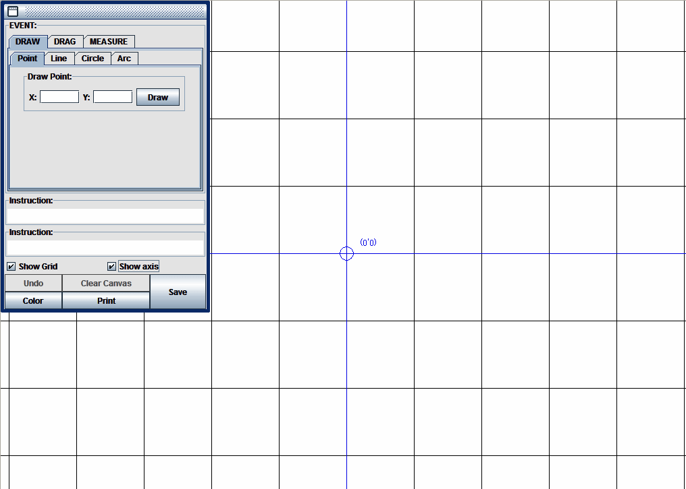
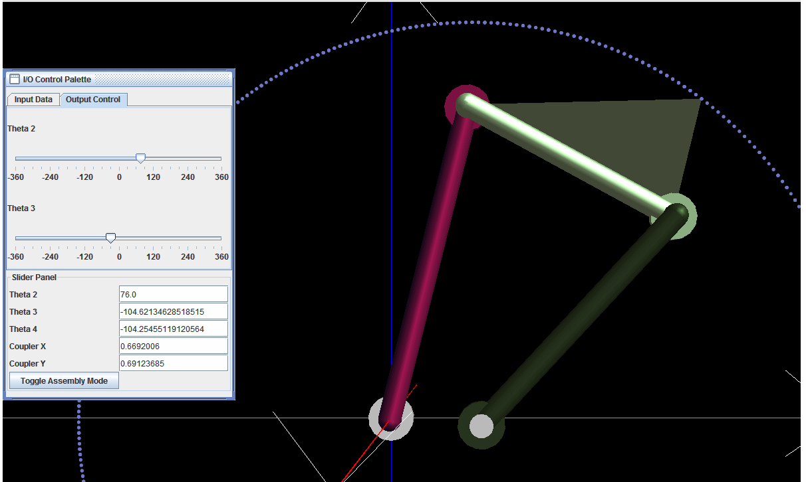

Schematic Diagram of a 4 Bar RRRR Linkage
In this experiment you will asked to design a RRRR mechanism whose coupler curve will pass through 3 given points. While this problem can be solved analytically, a graphical method of synthesis will be used here. Go to the Procedure Tab to see an animated guide to the geometrical constructions required. An animation of a sample 4 bar RRRR mechanism passing through 3 given points can bee seen by clicking on the Demo Tab.

Animation of a RRRR Mechanism with coupler curve passing moving through three given locations
- Clicking on the buttons will rotate the crank in the directions indicated. The slider can be used for controlled rotation.
- The view can be rotated about a point by keeping the left mouse button pressed and rotating the mouse.
- The view can be translated by keeping the right mouse button pressed and translating the mouse in the desired direction
- The scroll button or middle mouse button can be used for zooming.
- The view can be rotated about the coordinate axes by using the left (<--) and right (-->) keys and the Page Up and Page Down keys on the keyboard.
- Using the Up Arrow and Down Arrow keys will move the view towards or away from the viewer..
- The - and + (or Shift + =) keys may be used for zooming out and zooming in.
- Pressing the = key will get the view back to default.
The animation below gives a step by step guide to the geometrical constructions involved in synthesizing a 4 bar RRRR mechanism whose coupler curve passes through 3 given points. If undisturbed , the animation will proceed at a predetermined pace. You can either click on the animation itself to move from step to step as per your convenience. Alternatively you can use the controls at the bottom of the animation to see it at your own pace.
Clicking on the image will open the Drawing Board applet in a new browser window/tab. Use the Drawing board to do the constructions shown in the Instructions Tab and synthesize your mechanism. You are free to choose the coordinates of the points. However for convenience we recommend that you choose points with coordinates between 1 to 10, so that the synthesized mechanism is easily viewable in the simulator without much scaling. While using the drawing board, we suggest that you scale the coordinates up by a factor of 10 so that you obtain a clear figure without having much scaling and your construction is also more accurate. That is, say your coordinates are (5,5), (1,6),(3,2), while using the drawing board scale them up to (50,50), (10,60), (30,20) at least. Once you obtain the link lengths, scale them down by 10 and feed the data to the simulator in the Simulator tab.

The simulator applet allows you to assemble your RRRR mechanism and run it. Click on the image below. A new browser window or tab will open with the applet. The applet is very similar to the animation at the beginning of this page and the instructions for using it apply to this applet as well. Perform the following tasks using the simulator.
- Use the mouse to drag the I/O Control Palette to any convenient location.
- Click on the Input Data tab. Provide the link details i the designated text boxes that appear under this tab. Click on the Update Button. Use the mouse to move the viewpoint so that the linkage and the three speheres representing the three required points on the coupler curve are visible.
- Click on the Output Control tab. Use the slider labeled Theta 2 in the menu provided to rotate the crank. Obtain the complete coupler curve. The output data will be displayed in the Slider Panel in the designated text boxes. Check if the coupler curve passes through the designated points. Compare the mechanism configuration with that obtained through graphical analysis to validate your results. Check if all the points are reachable in a single assembly mode. The synthesized mechsnism may be a Grashofian double rocker for instance, in which case the points may lie on different branches of the coupler curve, and hence all of them may not be reachable with any one assembly mode. In that case, the synthesis will have to be redone by using different choices for length of ground link, crank or initial crank orienttaion.
- Click the Toggle Assembly Mode button to run the mechanism in the other feasible assembly mode if required.

- A. K. Mallik, A. Ghosh and G. Dittrich - Kinematic Analysis and Synthesis of Mechanisms, CRC Press Inc. Boca Rato
- A. Ghosh and A. K. Mallik - Theory of Mechanisms and Machines, Affiliated East-West Press (P) Ltd., New Delhi
- Kenneth J. Waldron, Gary L. Kinzel - Kinematics, Dynamics And Design Of Machinery, Wiley India Pvt Ltd
- John Joseph Uicker, G. R. Pennock, Joseph Edward Shigley - Theory of machines and mechanisms , Oxford University Press
- Arthur G. Erdman, George N. Sandor, Sridhar Kota - Mechanism Design: Analysis And Synthesis, Prentice Hall
- Atmaram H. Soni -Mechanism Synthesis and Analysis,, McGraw-Hill Inc.,US